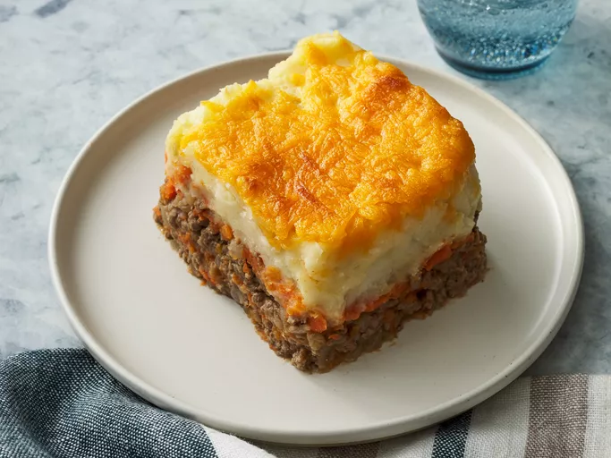

Shepherds Pie

What is Shepherd's Pie?
Shepherd's pie, cottage pie, or in French cuisine hachis Parmentier, is a savoury dish of cooked minced meat topped with mashed potato and baked, formerly also called Sanders or Saunders. The meat used may be either previously cooked or freshly minced. The usual meats are beef or lamb. The terms shepherd's pie and cottage pie have been used interchangeably since they came into use in the late 18th and early 19th centuries, although some writers insist that a shepherd's pie should contain lamb or mutton, and a cottage pie, beef.
Ingredients
- Ground Beef: You could also ground lamb if you prefer.
- Mashed Potatoes: Use starchy potatoes (like russet or Yukon Gold) for the best mashed potatoes. The mashed potatoes are also made with butter, onion, and Cheddar cheese.
- Vegetables: This shepherd's pie includes carrots and onions.
- Flour: All-purpose flour will thicken the beef gravy.
- Ketchup: Ketchup will add a little tang to the ground beef mixture.
- Beef Broth: Beef broth creates a gravy-like consistency in the middle.
- Cheese: Top the shepherd's pie with extra Cheddar for a cheesy finish.
How to make Shepherd's Pie
- Bring a large pot of salted water to a boil. Add potatoes and cook until tender but still firm, about 15 minutes. Drain and mash. Mix in butter, finely chopped onion and 1/4 cup shredded cheese. Season with salt and pepper to taste; set aside.
- Bring a large pot of salted water to a boil. Add carrots and cook until tender but still firm, about 15 minutes. Drain, mash and set aside. Preheat oven to 375 degrees F (190 degrees C.)
- Heat oil in a large frying pan. Add onion and cook until clear. Add ground beef and cook until well browned. Pour off excess fat, then stir in flour and cook 1 minute. Add ketchup and beef broth. Bring to a boil, reduce heat and simmer for 5 minutes.
- Spread the ground beef in an even layer on the bottom of a 2 quart casserole dish. Next, spread a layer of mashed carrots. Top with the mashed potato mixture and sprinkle with remaining shredded cheese.
- Bake in the preheated oven for 20 minutes, or until golden brown. Serve hot and enjoy!
Home